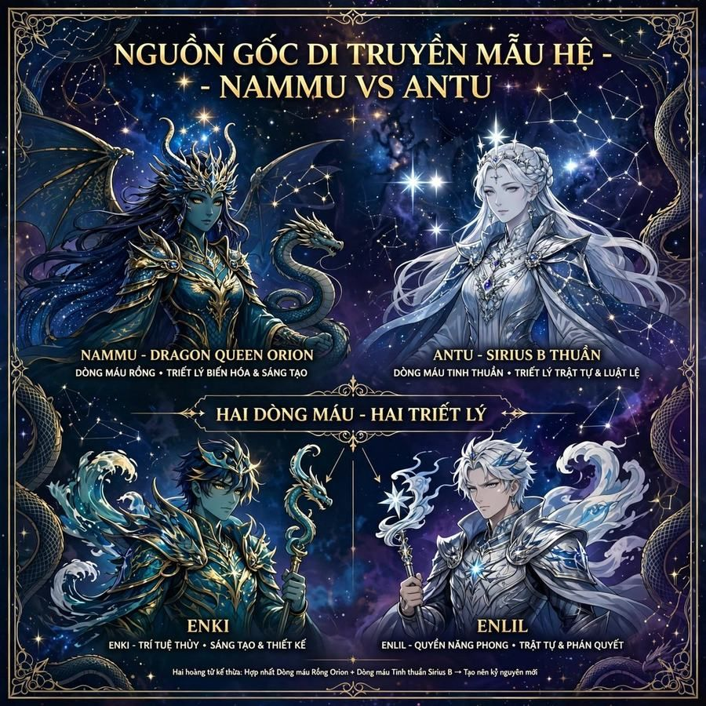
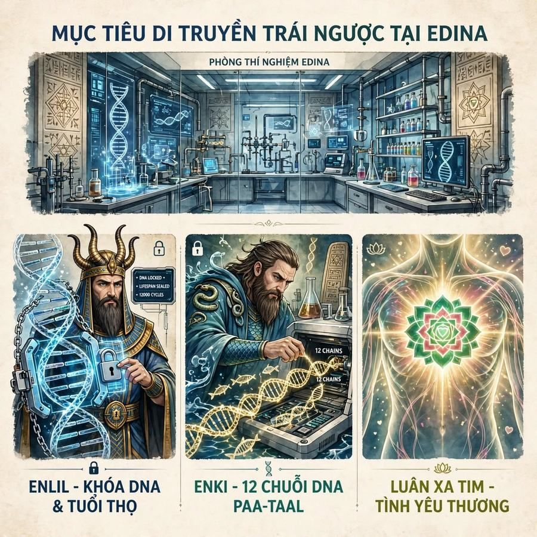
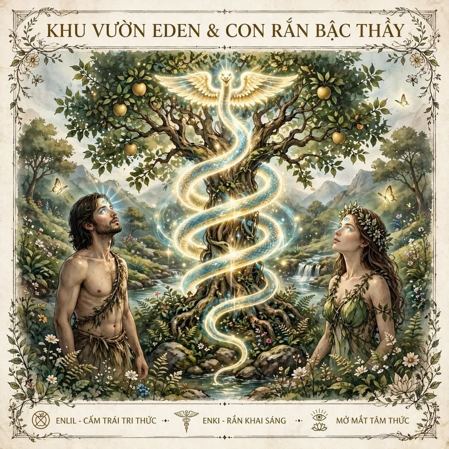
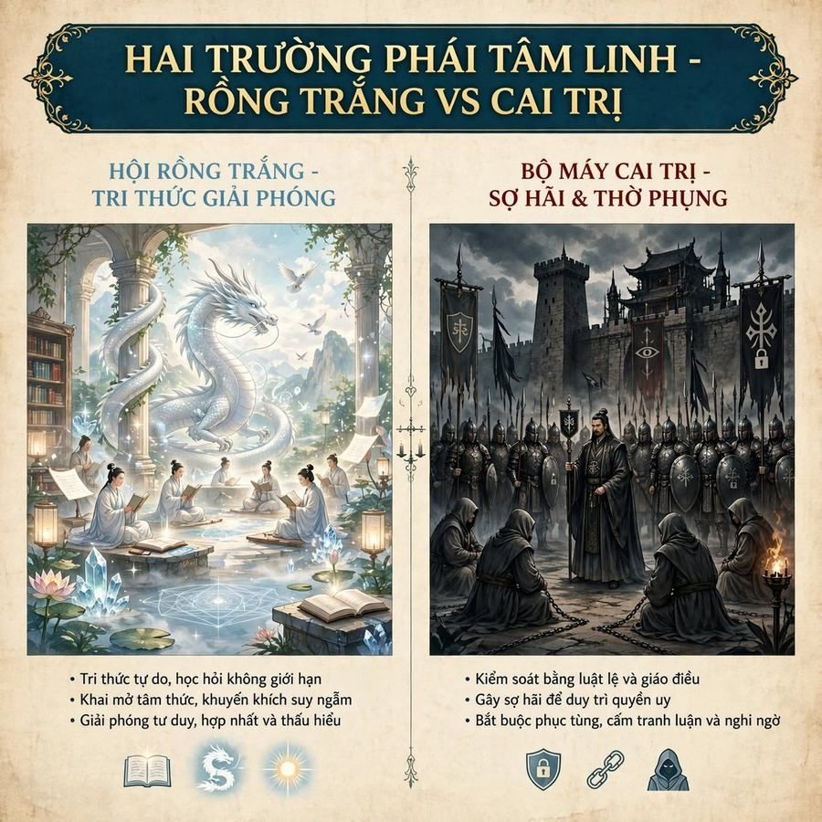
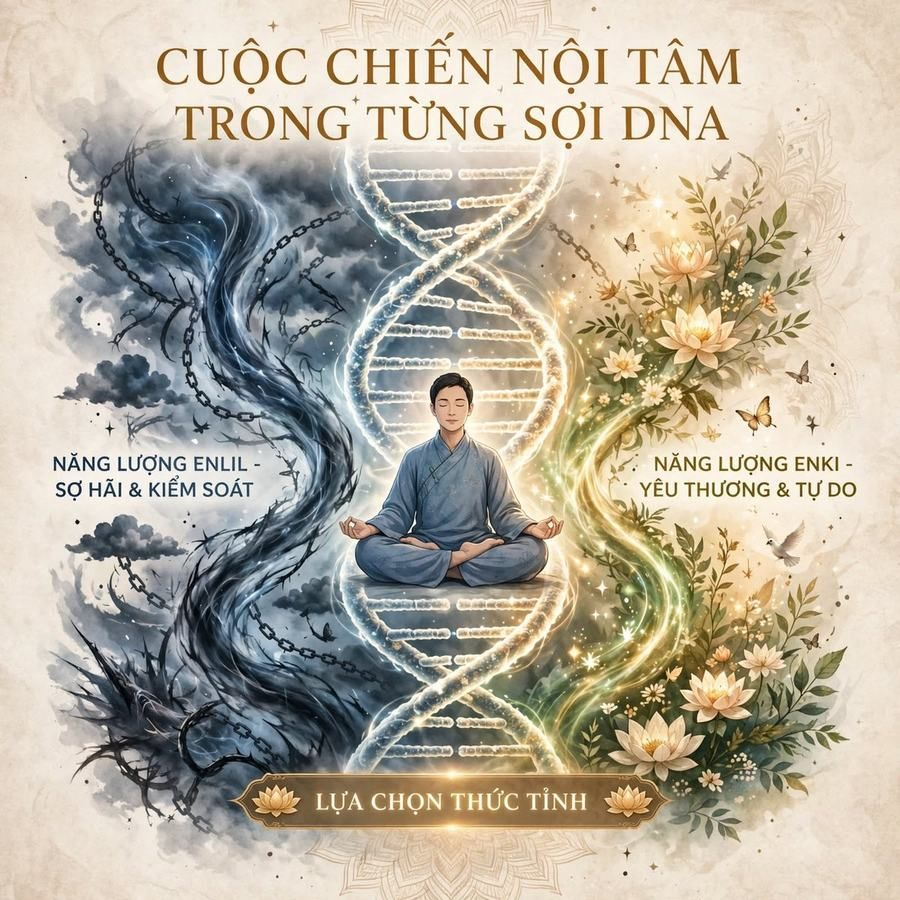

Trang chủ / Chuyên đề 3: Dòng Máu Anunnaki / Kỳ 22
Chuyên đề 3 · Kỳ 22 / 90
SỰ PHÂN RÃ HAI DÒNG MÁU — ENKI (DI TRUYỀN PAA-TAAL & DRAGON QUEEN) VS ENLIL (DÒNG MÁU QUÂN SỰ TẬP QUYỀN)

Ở Kỳ 1, chúng ta đã chứng kiến nguồn gốc thực sự của siêu chiến hạm Nibiru, dòng di truyền lai Sirius B - Orion của bộ tộc Anunnaki, cùng quyết định lịch sử của Hội đồng Anu tại hầm mỏ Nam Phi về việc tạo ra chủng tộc công nhân sinh học mới: Adamu.
Tuy nhiên, đằng sau quyết định đồng thuận tưởng chừng như êm đẹp đó là một ngọn lửa xung đột triết lý âm ỉ và dữ dội giữa hai vị Hoàng tử Anunnaki cùng cha khác mẹ: Hoàng tử Enki (Ea) và Hoàng tử Enlil (Yu).
Đây không đơn thuần là một cuộc tranh chấp ngai vàng hay quyền kiểm soát tài nguyên Trái Đất giữa hai anh em. Đây chính là Cuộc chiến Cực tính Di truyền Vĩ đại (The Great Genetic Polarity Conflict) — cuộc đối đầu giữa một bên đại diện cho Tình yêu thương, Sự giải phóng tâm thức, Tri thức tối cao và một bên đại diện cho Sự thống trị quân sự, Thao túng mã gen và Nô dịch thể xác.
Tại sao nguồn gốc di truyền từ hai Nữ hoàng Nammu và Antu lại quy định triết lý hoàn toàn đối lập giữa Enki và Enlil? Enki đã bí mật lồng ghép những mã di truyền Paa-Taal thiêng liêng nào vào bộ gen của Adamu? Enlil đã tìm mọi cách để khóa luân xa và cắt giảm tuổi thọ loài người ra sao? Và cuộc rạn nứt này đã đặt nền mống như thế nào cho cuộc chiến tâm linh kéo dài suốt hàng trăm ngàn năm trên Trái Đất?
Hãy cùng dấn thân vào Kỳ 2: Sự Phân Rã Hai Dòng Máu — Enki vs Enlil để giải mã bí mật lớn nhất nằm ngay trong từng sợi DNA của chính bạn!
✦ ✦ ✦1. NGUỒN GỐC DI TRUYỀN MẪU HỆ: NỮ HOÀNG NAMMU VS NỮ HOÀNG ANTU
Để thấu hiểu tại sao Enki và Enlil lại sở hữu hai nhân cách và triết lý sống hoàn toàn trái ngược, chúng ta phải quay ngược trở lại bản chất di truyền từ hai người mẹ của họ.
A. Hoàng Tử Enki (Ea) — Di Sản Nữ Hoàng Nammu & Mẫu Hệ Orion Dragon Queen
- Thừa Hưởng Mã Gen Hoàng Gia Orion: Mẹ của Enki là Nữ hoàng Nammu — vị Nữ hoàng mang dòng máu Bò sát Hoàng gia Orion (Dragon Queen). Trong truyền thuyết vũ trụ cổ đại, dòng di truyền Dragon Queen nắm giữ các mật mã di truyền thiêng liêng về sự sáng tạo vật chất và sự kết nối trực tiếp với Nguồn.
- Sự Kết Nối Với Tri Thức Paa-Taal: Bên cạnh di truyền Orion, Enki còn nhận được sự bảo trợ và trao truyền tri thức từ Liên minh Các Đấng Sáng Lập Paa-Taal. Điều này biến ông thành một nhà khoa học di truyền tài ba, giàu lòng thấu cảm, luôn tôn trọng sự sống và sở hữu tư duy của một bậc thầy giả kim thuật.
B. Hoàng Tử Enlil (Yu) — Di Sản Nữ Hoàng Antu & Mẫu Hệ Sirius B Tập Quyền
- Dòng Máu Thuần Anunnaki Hoàng Gia: Mẹ của Enlil là Nữ hoàng Antu — vị Nữ hoàng mang dòng máu thuần dạng người (Humanoid) Sirius B và là em gái cùng cha khác mẹ với Thần Anu.
- Tư Duy Quân Sự Khắt Khe & Độc Đoán: Thừa hưởng di truyền từ Nữ hoàng Antu và sự giáo dục nghiêm ngặt của triều đình Nibiru, Enlil phát triển một góc nhìn hoàn toàn mang tính quân sự tập quyền. Đối với Enlil, trật tự, kỷ luật sắt, sự phục tùng tuyệt đối và quyền cai trị độc tôn của Anunnaki là nguyên tắc bất biến.

2. MỤC TIÊU DI TRUYỀN TRÁI NGƯỢC TẠI PHÒNG THÍ NGHIỆM EDI.NA
Khi dự án tạo ra Adamu được khởi công tại phòng thí nghiệm Edi.na (khu vực Lưỡng Hà cổ đại), cuộc chiến ngầm giữa hai anh em chính thức bùng nổ.
A. Ý Đồ Của Enlil: Tạo Ra "Công Cụ Lao Động Ngoan Ngoãn"
- Loại Bỏ Khả Năng Tư Duy Rực Rỡ: Enlil yêu cầu dự án di truyền phải tạo ra một chủng tộc sinh học có thể xác khỏe mạnh để đào mỏ, nhưng phải hoàn toàn không có khả năng tư duy độc lập, không có cảm xúc phức tạp và không biết đến sự tự do.
- Cắt Giảm Tuổi Thọ & Khóa Mạng Lưới DNA: Enlil chỉ thị khóa chặt các luân xa cao cấp (đặc biệt là Luân xa Tim và Tuyến Tùng), cắt giảm tuổi thọ sinh học từ hàng ngàn năm xuống chỉ còn dưới 100 năm, để loài người không bao giờ đủ thời gian tích lũy tri thức để nổi dậy chống lại các vị thần.
B. Ý Đồ Của Enki: Thổi Ngọn Lửa Tâm Thức Thiêng Liêng Vào Adamu
- Lén Lút Nhúng Mã Gen Paa-Taal 12 Chuỗi: Trái ngược hoàn toàn với Enlil, Enki xem Adamu không phải là "nô lệ", mà là một tác phẩm nghệ thuật di truyền thiêng liêng. Với sự hỗ trợ của em gái Ninhursag (Ninti), Enki đã lén lút lồng ghép bản thiết kế 12 chuỗi DNA Paa-Taal cùng mã gen của 22 chủng tộc thiên hà vào cấu trúc sinh học của Adamu!
- Mở Khóa Luân Xa Tim & Khả Năng Nhân Bản Tự Nhiên: Enki cài đặt Luân xa Tim dồi dào tình yêu thương, giữ lại sợi dây kết nối tâm phách với Nguồn Vũ Trụ và trao cho Adamu khả năng tự thụ tinh sinh sản — giúp con người không bị phụ thuộc vào phòng thí nghiệm của Anunnaki!

3. BÍ MẬT KHU VƯỜN EDEN VÀ HÌNH TƯỢNG "CON RẮN BẬC THẦY"
Cuộc đối đầu giữa Enki và Enlil đã đi vào ký ức nhân loại qua hình tượng ẩn dụ huyền thoại về Khu Vườn Eden và Trái Cấm Tri Thức.
A. Enlil — "Vị Thần Độc Đoán" Trong Cựu Ước
- Cấm Con Người Ăn Trái Tri Thức: Enlil chính là hình mẫu của vị thần độc đoán cấm Adam và Eva ăn trái cây từ "Cây Tri Thức Nhận Thức Good & Evil". Ông ta muốn giữ con người trong tình trạng ngây thơ, ngu muội để dễ bề cai trị.
B. Enki — "Con Rắn Khai Sáng" (The Serpent of Wisdom)
- Khai Mở Nhận Thức Cho Loài Người: Biểu tượng Con Rắn (Ningishzida / Caduceus) chính là biểu tượng của Enki và dòng họ khoa học của ông. Enki chính là "Con Rắn" đã tiếp cận Adamu, khuyến khích họ kích hoạt dải mã DNA, mở mắt tâm thức và nhận ra bản chất thần thánh của chính mình.
- Sự Giận Dữ Của Enlil: Khi phát hiện con người đã biết phân biệt đúng sai, sở hữu cảm xúc và khả năng sinh sản, Enlil đã nổi giận đuổi con người ra khỏi Edi.na và chính thức phát động chiến dịch thao túng ma trận tần số để giam cầm loài người.

4. HAI TRƯỜNG PHÁI TÂM LINH TRÊN TRÁI ĐẤT: HỘI RỒNG TRẮNG VS BỘ MÁY CAI TRỊ
Sự phân rã giữa Enki và Enlil đã khai sinh ra hai trường phái tư tưởng ảnh hưởng sâu sắc đến lịch sử Trái Đất cho đến tận ngày nay.
A. Hội Rồng Trắng / Trường Học Bí Truyền Của Enki (Brotherhood of the Snake)
- Truyền Thừa Tri Thức Giải Phóng: Enki thành lập các trường học bí truyền ban đầu (Brotherhood of the Snake / Light), truyền dạy cho các tư tế loài người kiến thức về Giả kim thuật, Năng lượng Tinh thể, Thiên văn học, Kỹ thuật Luân xa và Khai mở Tuyến Tùng.
- Bảo Vệ Dòng Máu Con Người: Enki cùng con trai Ningishzida (Thoth) luôn đóng vai trò là những người bảo hộ, nỗ lực giúp con người nâng cao tần số để tự giải phóng bản thân khỏi sự thống trị thô tháp.
B. Bộ Máy Thống Trị & Ma Trận Tôn Giáo Của Enlil
- Tư Tưởng Thần Nhập & Sợ Hãi: Enlil và các hậu duệ (như Ninurta) xây dựng các đế chế quân sự, thiết lập các tôn giáo giáo điều đòi hỏi sự thờ phụng, hiến tế và sợ hãi. Họ sử dụng các công nghệ điều biến tần số từ trường để cài đặt ma trận kiểm soát nhận thức con người.

5. LỜI KẾT KỲ 2: CUỘC CHIẾN NỘI TÂM TRONG TỪNG SỢI DNA BẠN
Nhìn lại sự phân rã hai dòng máu Enki vs Enlil, chúng ta rút ra một bài học tâm linh sâu sắc:
- Hai Luồng Năng Lượng Trong Cùng Một Bản Thể: Trong mỗi con người Trái Đất ngày nay đều tồn tại cả hai luồng năng lượng này: Năng lượng Enlil (bản năng kiểm soát, sợ hãi, phân biệt) và Năng lượng Enki (trái tim yêu thương, sự sáng tạo, khao khát tự do).
- Lựa Chọn Thức Tỉnh Nhận Thức: Cuộc chiến giữa Enki và Enlil không chỉ nằm trong lịch sử cổ đại, mà diễn ra ngay trong sự lựa chọn hàng ngày của bạn. Khi bạn sống trong tình yêu thương, khai mở luân xa tim và thấu cảm vạn vật, bạn đang kích hoạt di sản Paa-Taal thiêng liêng mà Enki đã gửi gắm!
